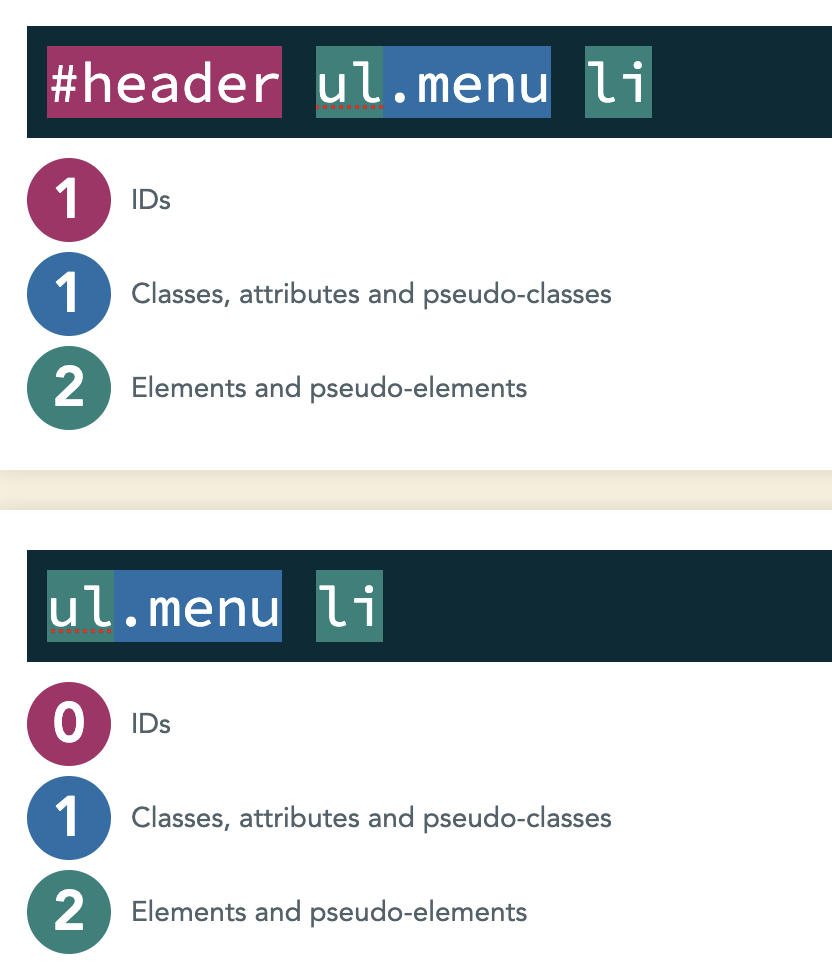
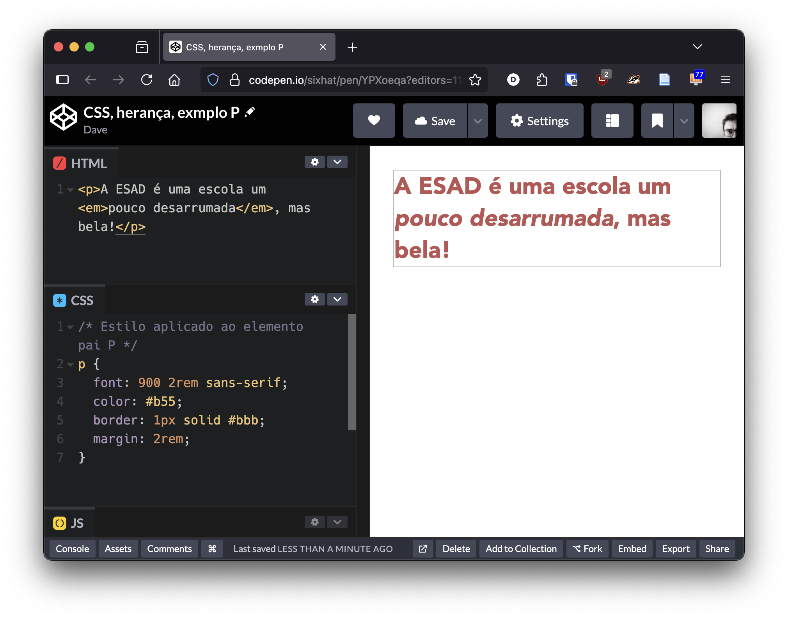

Especificidade e Herança de Regras CSS
Os seletores CSS são aplicados aos elementos HTML para definir estilos. No entanto, quando vários seletores podem se aplicar ao mesmo elemento, é importante entender como o navegador decide qual estilo aplicar. Isso é determinado pela especificidade e pela herança.
Especificidade
A especificidade é um sistema de pontuação que o navegador usa para determinar qual regra CSS deve ser aplicada a um elemento quando várias regras se aplicam. A especificidade é calculada com base em diversos items pela ordem decrescente seguinte:
- Importância: Regras marcadas com
!importanttêm a maior prioridade, independentemente da especificidade. É melhor evitar seu uso, pois pode tornar o CSS difícil de manter. - Estilos inline no próprio elemento - Estes estilos tem máxima prioridade. São mais especificos que os ID (próximo ponto).
- Seletores de ID: Cada seletor de ID conta como 100 pontos. Por exemplo,
#headertem uma especificidade de 100. - Seletores de classe, atributos e pseudo-classes: Cada um conta como 10 pontos. Por xemplo,
.menu,[type="text"], e:hovertêm uma especificidade de 10 cada. - Seletores de elementos e pseudo-elementos: Cada um conta como 1 ponto. Por exemplo,
div,p, e::beforetêm uma especificidade de 1 cada. - Seletores universais (
*) e negação (:not()): Estes não adicionam pontos à especificidade. - Ordem de declaração: Se duas regras têm a mesma especificidade, a última regra declarada no CSS será aplicada.
Exemplo de cálculo de especificidade:
/* Especificidade: 100 (ID) + 10 (classe) + 2 (2 elementos) = 112 */
#header ul.menu li {
color: blue;
}
/* Especificidade: 10 (classe) + 2 (2 elementos ) = 12 */
ul.menu li {
color: red;
}

Se aplicarmos estes estilos a um elemento HTML como:
<div id="header">
<ul class="menu">
<li>Item 1</li>
<li>Item 2</li>
</ul>
</div>
O texto dos itens da lista será azul, pois a regra com ID tem uma especificidade maior (112) do que a regra com classe (12).
Importância de definir regras com especificidade correta.
Num ficheiro de estilos, a especificidade deve aumentar ao longo da ficheiro. As regras menos específicas devem aparecer primeiro e as mais específicas no final do ficheiro. isto deve-se a que em caso de igualdade de especificidade as regras que aparecem posteriormente serem aquelas que são adotadas. Começando com regras com especificidade baixa permite que ao escrever regras muito específicas, estas tenham que redefinir muito poucas propriedades de estilo dos elementos HTML.
Online há ferramentas onde podem testar a especificidade das vossas folhas de estilo. O ideal é ter especificidades baixas com os valor mais altos no final do ficheiro.
Sugestões para a definição de estilos
- Escolha preferencialmente seletores com baixa especificidade. Dessa forma estes serão mais portáveis.
- Use preferencialmente seletores de classes para definir os estilos que necessita. Classes tem especificidade relativamente baixa e podem ser aplicadas a multiplos elementos html.
- Um sistema baseado em classes permite definir um sistema de design desacoplado da estrutura dos conteúdos.
- Reduza ao mínimo estritamente necessário a utilização seletores ID. São muito especificos.
- Evite utilizar
!important. Folhas de estilo com regras com este nível de especificidade normalmente significam que as folhas de estilo ficaram desorganizadas. A exceção é quando se utilizam bibliotecas externas ao nosso controlo e é necessário utilizar!importantpara sobreescrever alguma regra imposta pela biblioteca externa.
APRENDER MAIS em MDN Web Docs sobre Especificidade.
Herança
Em CSS, a herança é o mecanismo pelo qual certos estilos são passados de um elemento pai para seus elementos filhos. Isso significa que, se um estilo é aplicado a um elemento pai, os elementos filhos herdarão esse estilo, a menos que seja especificado de outra forma.
No CSS há propriedades que são herdadas por padrão, como color, font-family, e line-height. Outras propriedades, como margin, padding, e border, não são herdadas.
Para saber se uma propriedade é herdada, deve consultar a documentação do CSS e verificar se a propriedade que quer utilizar é listada como Inherited.
Exemplo de herança
/* Estilo aplicado ao elemento pai P */
p {
font: 900 2rem sans-serif;
color: #b55;
border: 1px solid #bbb;
margin: 2rem;
}
Estes estilos quando aplicados ao seguinte HTML
<p>A ESAD é uma escola um <em>pouco desarrumada</em>, mas bela!</p>

A cor e a fonte utilizadas na regra vão ser herdadas pelo elemento em. Já a linha do rebordo não será herdada. Ver exemplo online.